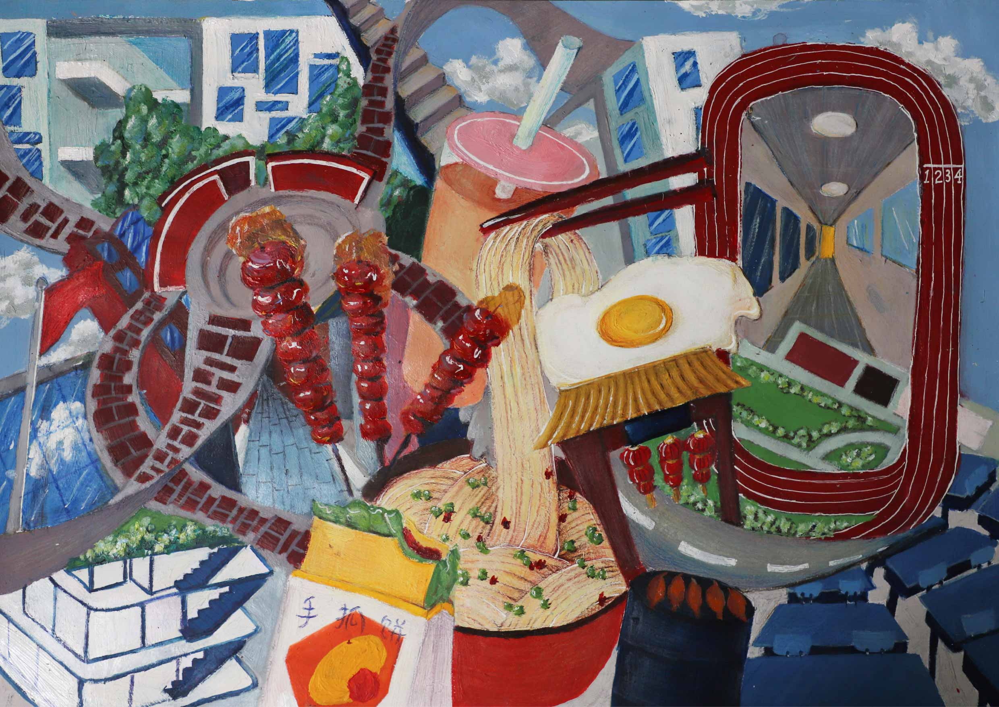

Individual Work
Time: 08/2020
Duration: 1 weeks
Material: Gouache on Paper

×

Our Old Days
Size: 21 x 15 in.
Near my junior high school there was a snack street, where my friends and I often hung out. However, due to the urban renewal, the snack street had to be demolished. In this painting, I incorporate some elements of snack street, such as shredded cakes, sugar-coated haws, and baked sweet potatoes, into the modern classroom buildings and garden of our school in order to memorize our old days.